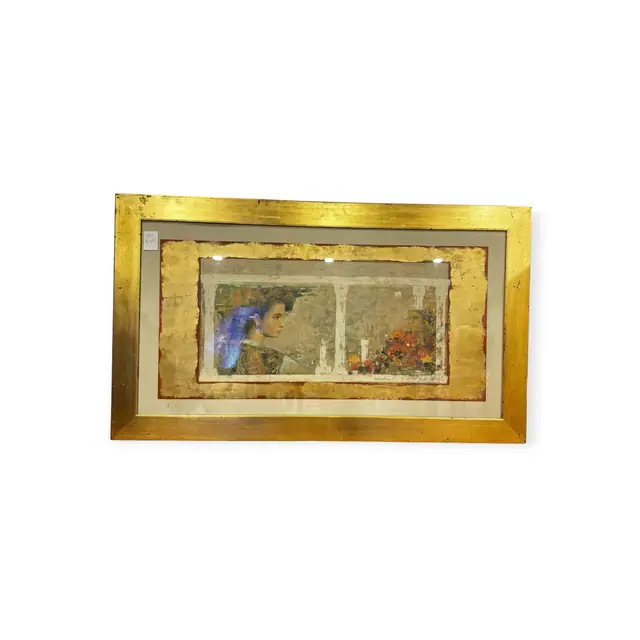
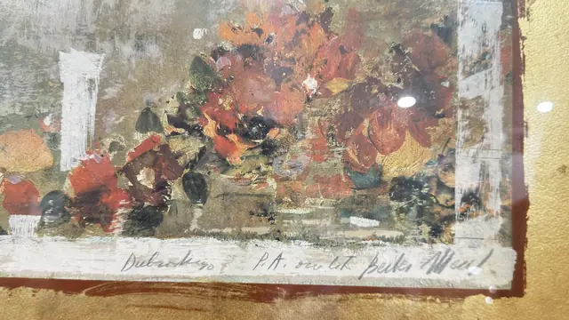
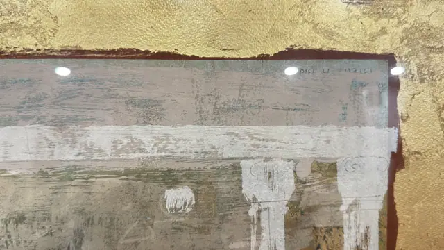
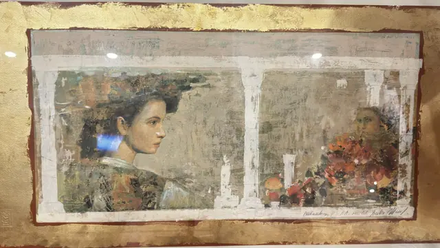

Paintings & Prints
Large Fresco-Style Panel With Gold Leaf, Signed, Framed
· late 20th to early 21st century
Price Upon Request




About the Item
A long horizontal composition worked to look like a wall painting recovered from a ruin: chalky white columns, capitals and drapery-like forms emerge from a scumbled ground of grey-green, ochre and dusty rose, with passages scraped back and rubbed to bare texture. Broad white sweeps run across the middle like a plaster course, and touches of applied gold leaf glint along the right edge. The paint is dry and thickly worked, with visible brush ridges, and the panel is set behind a broad gold-leafed border inside a plain gilt frame. Medium: oil/mixed media with gold leaf on canvas or canvas-textured panel. Signed lower right of the panel, handwritten in dark ink/pencil. Inscribed on the reverse or mount: handwritten line across the lower edge of the panel, partly legible: it begins with a word reading approximately 'Dubrost?ego', followed by 'P.A.' and ending in a signature that reads approximately 'Bede? Mihal'; the individual letters are not certain; faint painted pseudo-lettering within the composition at upper right, decorative and not readable. Condition: Surface intentionally distressed, so wear is hard to separate from the technique; no obvious damage, tears or flaking seen. Some dust along the lower frame edge.
Details
- Creation Year:
- late 20th to early 21st century
- Dimensions:
- Height: 28.0 in (71.12 cm)
Width: 48.0 in (121.92 cm)
outside of frame - Medium:
- oil/mixed media with gold leaf on canvas or canvas-textured panel
- Period:
- 21St
- Condition:
- Offered in the condition shown in the photographs.
- Reference Number:
- VO-222
- Documentation:
- no certificate present
- Gallery Location:
- handwritten line across the lower edge of the panel, partly legible: it begins with a word reading approximately 'Dubrost?ego', followed by 'P.A.' and ending in a signature that reads approximately 'Bede? Mihal'; the individual letters are not certain; faint painted pseudo-lettering within the composition at upper right, decorative and not readable